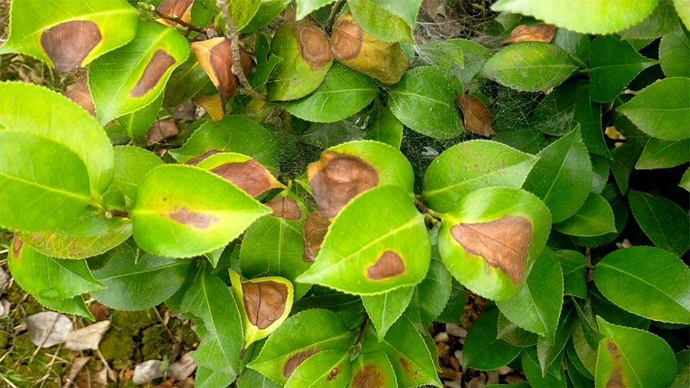
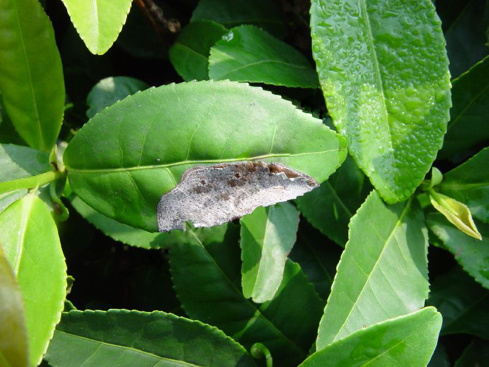

茶树炭疽病是由茶刺盘孢等炭疽菌属真菌引起的、发生在茶树的病害。该病主要危害茶树叶片，病斑半圆形或不规则形，分界明显，一般在叶尖、 叶缘开始产生水渍状黄褐色小点，扩展后病斑由褐色变为焦黄色，最后为灰白色。但受主脉限制常表现为半叶病斑，后期病斑表面散生许多黑色细小粒点。
茶树炭疽病是一个世界性病害，在中国各茶区均有发生，特别是温暖湿润的亚热带和热带茶区发生严重。该病可影响茶树的生理代谢，造成茶树产量与茶叶品质的下降。
茶树炭疽病的防治方法主要有：①选用抗病品种，加强树势培养管理； ②加强茶园肥培管理，增施磷钾肥，增强通风，还须清除脱落的病叶进行深埋； ③掌握最佳时间药剂防治，在发病前或发病初期防治可起到事半功倍的效果。
茶树炭疽病主要危害当年生成叶，老叶和嫩叶发病较少。先在叶尖或叶片边缘产生水渍状浅绿色至暗绿色病斑， 后沿叶脉扩展为半透明黄褐色不规则病斑，边缘浸润性逐渐扩大， 后期由褐色变为灰青色，病、健组织分界明显，病斑大小常以中脉为界。病部生出黑色小粒点 即病原菌的子实体分生孢子盘。早春老叶上有病斑，多是越冬后期病斑。
病菌以菌丝体或分生孢子盘在茶树病组织里越冬。翌年5-6月气温20℃， 相对湿度80-90%，散放出大量分生孢子，借雨水飞溅传播。分生孢子落到叶片上以后， 从嫩叶背面茸毛处侵入，经8-14天潜育后，出现小病斑，经15-30 天扩展， 形成10-20毫米大病斑，这时嫩叶已长成成叶。病部的分生孢子成熟后，遇有雨湿条件不断进行再侵染。
茶树炭疽病害的发生与流行受气候、栽培管理和品种抗性等因素的影响，其中主要气候原因是温度与空气湿度，温暖多雨的气候适宜炭疽菌的生长与繁殖。 因此，阴雨连绵的雨季和雨雾弥漫的高湿茶区发病较严重；炭疽病有2个高发期，一般是6-7月上旬、9-10月上旬。茶树炭疽病的发生与茶树本身生长状况有关。有研究表明， 生长良好的茶树感染炭疽病的几率比生长不良的茶树小得多。另外，幼龄茶园或台刈后茶园，叶片幼嫩，水分含量高，易染茶树炭疽病。此外，不同茶树品种对炭疽病的抗性差异也很明显。
茶树的长势与茶树的抗病性有关，加强茶园管理，提升茶树自身的抗逆性， 可抵御病原菌的入侵或为害，应适当增施磷钾肥，提高茶树抗病力，避免单施氮肥。另外，对于发病严重的茶园，可结合清除病叶集中烧毁； 发病较轻的茶园可人工摘除病叶，以此减少茶园病原物基数。开辟新茶园时结合当地情况适当选用抗病茶树品种， 还应尽量避免茶树品种过于单一。对于成龄茶园修剪时要进行茶树修边、留出茶行间距，增加茶园通风，避免病原物滋生，有利于茶树健康生长。
及时进行化学防治：掌握发病前或发病初期防治， 防治部位要求叶子正反面全部喷到药液，尤以叶背更要喷湿。 高温或将要下雨时不可喷施，喷药要选择有两天晴天或多云时喷施， 以晴天上午8时左右叶面干时喷药为好，如喷药后遇雨淋必须补喷。在发病初期选用75%甲基托布津1000倍液、 50%苯来特1500倍液喷雾，有较好的治疗效果；选用75%百菌清1000倍药液进行防治也有良好的保护作用。 另外也可每亩使用3-4包戌唑醇，每包戌唑醇加水15千克喷施。此外，茶季结束后用0.5波美度的石硫合剂封园，降低炭疽病越冬病孢基数。